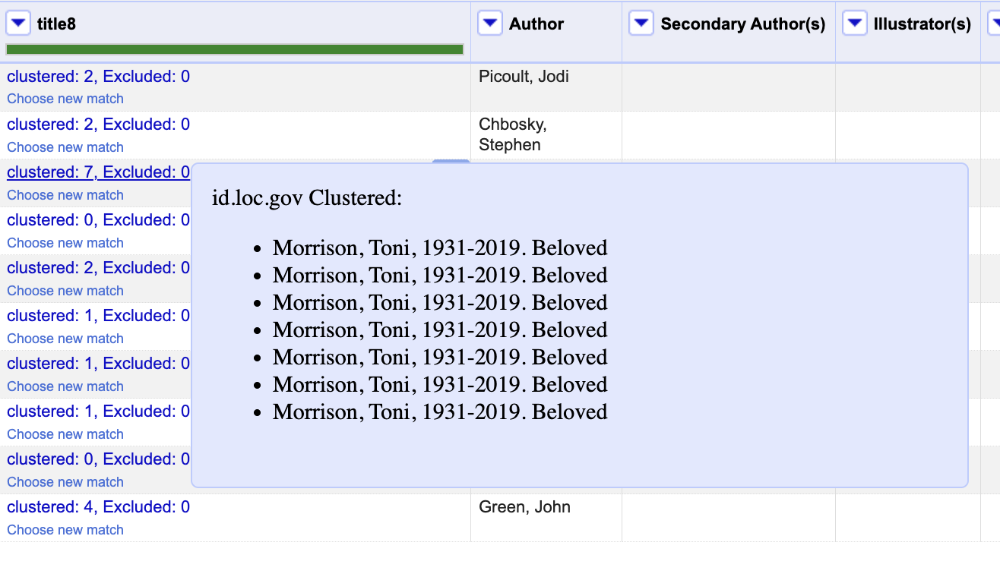
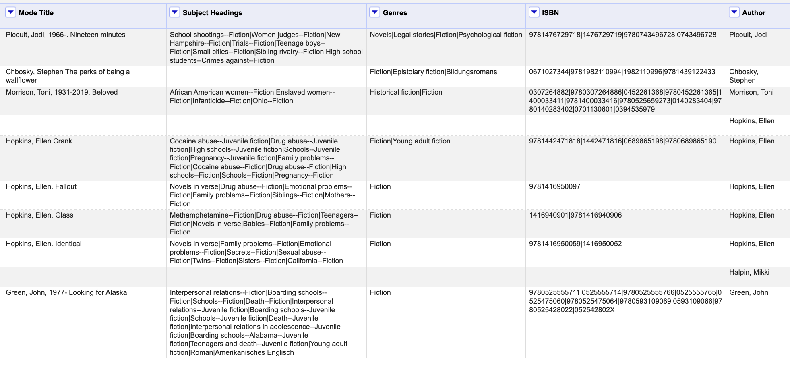
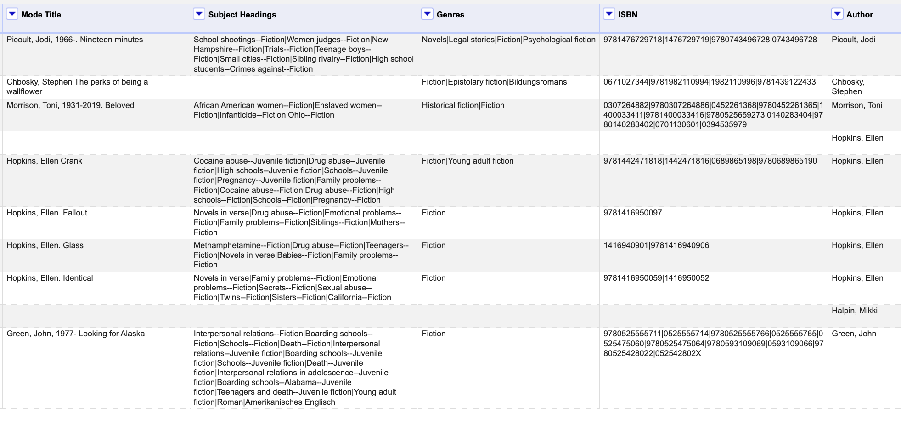

Our Tools
BookReconciler 📘💎 — Metadata Enrichment and Work-Level Clustering
Check out and star this project on GithubBookReconciler 📘💎 is a tool that helps you reconcile and enrich bibliographic data from multiple library and knowledge sources:
- Library of Congress
- Google Books
- OCLC / WorldCat
- HathiTrust
- VIAF
- Wikidata
You can take a spreadsheet with only title and author information, and you can add identifiers like ISBNs, OCLC numbers, or HathiTrust Volume IDs, as well as valuable contextual information like Library of Congress Subject Headings, genres, descriptions, page counts, and dates of first publication. Additionally, you can find and cluster different editions or manifestations of the same Work (e.g., translations, reprints, etc.).

The tool currently works as an extension of the software application OpenRefine, which makes it accessible to those with and without computational experience. It includes a user-friendly, human-in-the-loop interface for manually evaluating matches, defining Works (e.g., whether to include translations or not), and configuring the behavior of the service (e.g., matching all possible editions or just the best one).
The tool can also serve as a bridge to computational text analysis. A HathiTrust Volume ID can be used to computationally access the full text (for public domain works) or “bags of words” (for in-copyright works) for any text that is held by the HathiTrust Digital Library. This enable users to move from metadata to full computational text analysis. To learn more about accessing full text with Volume IDs, see the HathiTrust Feature Reader Python package.
Installation
1. Install OpenRefine
BookReconciler 📘💎 is designed to work with OpenRefine, an open-source tool for working with messy data.
- Visit the OpenRefine download page.
- Download the latest release for your operating system (Windows, macOS, or Linux).
- Unzip the package (if needed) and follow the included instructions to start OpenRefine.
- Once running, OpenRefine will be available at:
http://127.0.0.1:3333/
2. Install BookReconciler
Choose the installation method that works best for your system:
Option 1: Desktop App (Recommended)
Download and run the standalone desktop app.
 macOS (Intel or Apple Silicon):
macOS (Intel or Apple Silicon):
- Download the latest macOS app
- Open the
.dmgfile and drag BookReconciler.app to your Applications folder - Launch BookReconciler — your browser will automatically open to http://127.0.0.1:5001/
Note: On first launch, macOS may show a security warning. Right-click the app and select Open → Open to bypass.
 Windows:
Windows:
- Download the latest Windows installer (
.exe) - Run the installer and follow the prompts
- Launch BookReconciler from your Start Menu — your browser will automatically open to http://127.0.0.1:5001/
Note: Windows may show a SmartScreen warning. Click More info → Run anyway.
Once launched, you can access:
- Configuration interface: http://127.0.0.1:5001/
- OpenRefine endpoint: http://127.0.0.1:5001/api/v1/reconcile
You can find more installation options on GitHub.
Usage
Open your dataset/project in OpenRefine.
Click a column you want to reconcile—for example, the book “title” column.
Choose Reconcile → Start reconciling…

Click Add Standard Service.

Paste the service URL for BookReconciler, which will connect you with Library of Congress, Wikidata, Google Books, and more:
http://127.0.0.1:5001/api/v1/reconcileSelect a reconciliation type (e.g.,
LC_Work_Id,OCLC_Record,HathiTrust,VIAF_Personal,VIAF_Title,Wikidata_Title).Optionally, add “Additional Properties,” like the author’s name, which may help improve match performance.

Click Start Reconciling.
Wait for reconciliation to complete. This can take seconds to hours depending on the number of values. Then, inspect matches. 
Lastly, add new values—ISBNs, Subject Headings, Descriptions, etc.—based on matches. Select Edit Column -> Add columns from reconciled values…
 Choose the values that you want to add from “Suggested Properties” (possible values are different for each service).
Choose the values that you want to add from “Suggested Properties” (possible values are different for each service).  They will be added to the spreadsheet. 
They will be added to the spreadsheet. 
Customization
Open http://127.0.0.1:5001/ to adjust how BookReconciler matches, clusters, and writes back data. No code editing required.
Book Title Matching
Single Match Mode
Finds the best single edition (manifestation) of a work.
Good when you care about a specific edition (e.g., a 1950 reprint).
Uses Title + Author (and Publication Year if available).Cluster Match Mode
Groups all editions of the same work into a cluster (work-level).
Best for gathering as many identifiers as possible or studying works across editions.
Extend Data Behavior (how identifiers are written back)
Join Mode — all identifiers in one cell, separated by a pipe
|.
Example:123456789 | 987654321 | 192837465 | 564738291Row Mode — each identifier in its own row.
Example:123456789 987654321 192837465 564738291
Remove Subtitle from Titles
- Keep Subtitles — Titles remain as-is (e.g., Moby-Dick: or, The Whale).
- Remove Subtitles — Attempts to strip subtitles (e.g., Moby-Dick).
Optional: OCLC / WorldCat API Keys
If you plan to use OCLC’s protected endpoints, you can input your API keys on the configuration page.
Credit & Citation
This code is primarily written by Matt Miller, with contributions from Melanie Walsh. This project is supported by the Post45 Data Collective. The code is licensed under the MIT License (see LICENSE for details).
This project was initially supported by a grant from the National Endowment for the Humanities (NEH), “Post45 Data Collective: Enhancing Cultural Data Documentation, Interoperability, and Reach,” and led by co-PIs Dan Sinykin and Melanie Walsh. The grant was slated to run from 2024-2026, but it was abruptly cancelled in spring 2025.
If you use this tool, we’d love to hear from you! You can fill out this Google Form or email us.
If you use this tool as part of a publication, you can credit us by citing the following paper:
“BookReconciler📘💎: An Open-Source Tool for Metadata Enrichment and Work-Level Clustering”.
Matt Miller, Dan Sinykin, and Melanie Walsh. Joint Conference on Digital Libraries, Resources Track.
BibTeX Citation:
@inproceedings{miller-2025-bookreconciler,
title = {BookReconciler📘💎: An Open-Source Tool for Metadata Enrichment and Work-Level Clustering},
author = {Miller, Matt and Sinykin, Dan and Walsh, Melanie},
booktitle = {Joint Conference on Digital Libraries},
month = dec,
year = {2025},
publisher = {ACM/IEEE},
}Contributing
In the near term, maintenance of this tool will be supported by the Post45 Data Collective. However, to grow and sustain this project, we strongly welcome and encourage contributions from the broader community (or funding :D ).